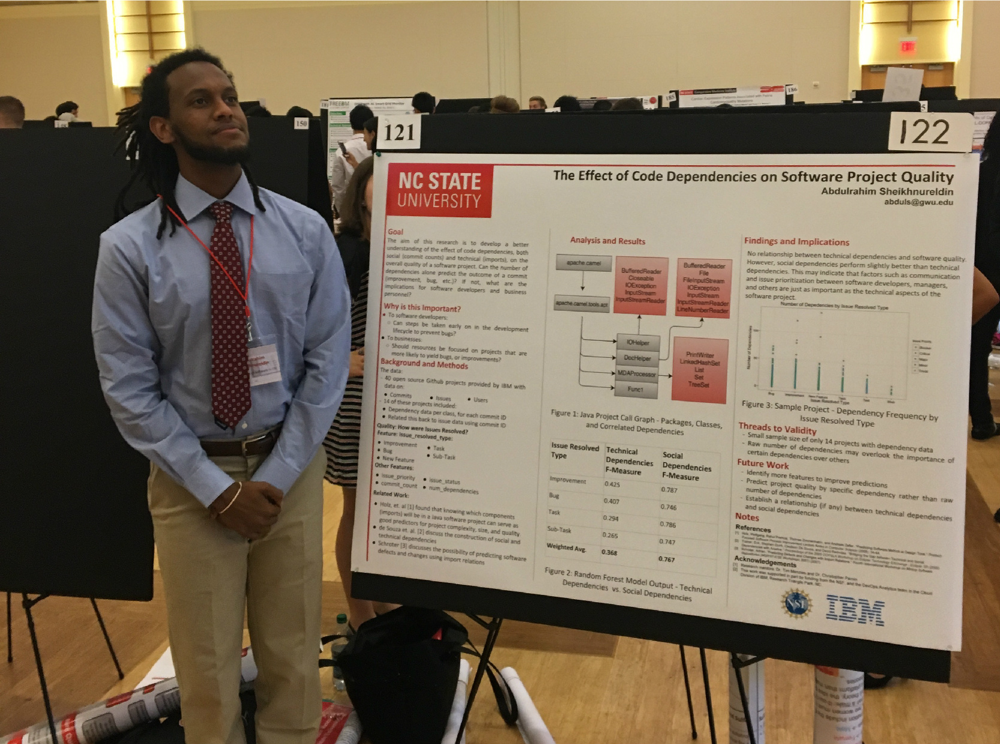
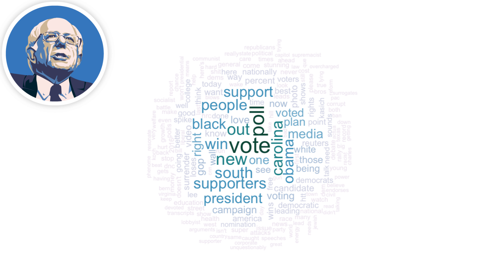
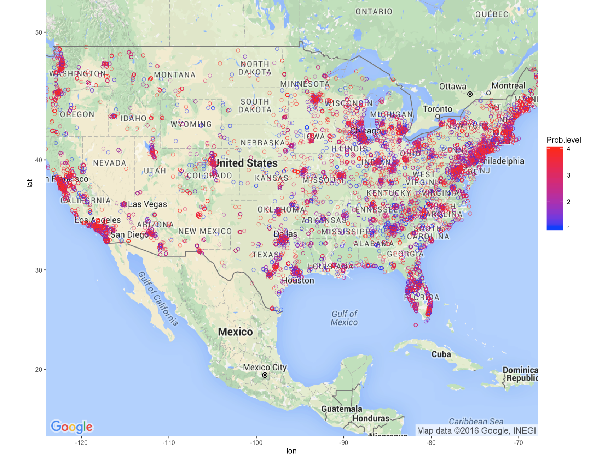

I am an avid learner who is always interested in new and exciting challenges. I have a passion for using data science to understand the unknown, and have experience with analytics, predictive modeling, and visualization. I have created interactive visualizations and analytics dashboards in R/Shiny, scraped data from the web, and handled large databases. I am always looking for a new challenge to apply my skills, help others, and learn more in the process.
The George Washington University
Data Science technical track
Cognosante
North Carolina State University
Catalist
D3 Systems
Bluelabs
Chief Technology Officer
Communications Chair
Avid reader. Check out my Goodreads profile.
Video editing. Check out my AMV channel.
Intramural soccer, pickup basketball enthusiast.
R
SQL
Java
Python
Javascript
C

The Effect of Code Dependencies on Software Project Quality

Twitter Mining the 2016 Presidential Election

Climate Change Survey Response Mapping